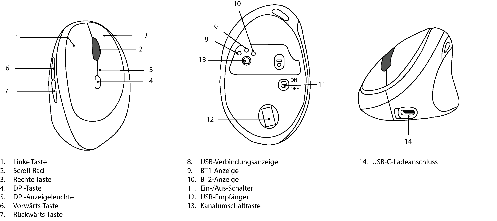

Technical Writer · Structured Content · Information Architecture
Weil Information überall verfügbar ist, entscheidet der Kontext. Deshalb denke ich Dokumentation nicht vom Dokument her, sondern von der Frage, mit der ein Nutzer danach sucht.
Profil
Über 18 Jahre Erfahrung an der Schnittstelle von B2B-IT, Kommunikation und Wissensstrukturen – geprägt durch Stationen bei IDG als Senior Research Manager, Program Manager Executive Education und Leitender Redakteur für COMPUTERWOCHE, CIO und TECCHANNEL.
Aktuell: IHK-Weiterbildung Technischer Redakteur (tekom-akkreditiert) mit Praxisprojekt bei der tecteam GmbH, Dortmund. Schwerpunkte: strukturierte Inhalte, modulare Dokumentation, Single Source Publishing, DITA/XML – mit langfristiger Ausrichtung auf CCMS-Beratung und Informationsarchitektur.
Projekte
Escape Room – DITA-Dokumentationsprojekt
Exemplarisches DITA-Projekt mit vollständigem Publishing-Workflow: Topic-based Writing, Key-basierte Wiederverwendung, automatisierter Export als HTML5, PDF und WordPress via DITA-OT, Python und WordPress REST API.
→ GitHub ansehenAI-ready Content Model
Eigenentwickeltes Framework zur Beschreibung von AI-ready Content-Architekturen. Es beantwortet die Kernfrage: Welche Struktur braucht Content, damit KI-Systeme ihn sinnvoll verarbeiten können – und was unterscheidet ein Content-System von einer Dokumentensammlung?
Das Modell definiert drei Bausteine (Struktur, Semantik, Granularität), acht Fundamente für den Systembetrieb und einen End-to-End-Kreislauf von Content-Erstellung bis kontinuierlicher Verbesserung. Gestützt auf Erkenntnisse der Information Energy 2026, des Docufy Summit und Zieglers RAG-Forschung zu DITA und semantischen Metadaten.
Dieses Framework ist kein akademisches Konstrukt – es ist mein eigenes Positioning-Instrument, das ich in Bewerbungsgesprächen, auf Konferenzen und im Austausch mit der Fachcommunity einsetze.
Version 1 Statische Infografik
Version 2 Interaktive Website
Was Version 2 neu bringt
Inhaltlich: erweiterter Semantik-Block (Semantik als Entscheidungslogik, nicht nur Tagging), vier statt zwei Relationstypen, iiRDS-Systemintegration als eigene Aussage.
Technisch: alle Elemente klickbar mit Infoboxen zu Erläuterung, Kontext und strategischer Einordnung. Single-File-HTML, keine externen Abhängigkeiten, direkt deploybar.
Bedienungsanleitung Vertikalmaus (Auszug)
Kursarbeit im Rahmen der IHK-Weiterbildung Technischer Redakteur. Erstellt für eine ergonomische Bluetooth-Maus (Tecknet TK-MS017) – inklusive Textkonzept, technischer Produktübersicht (Adobe Illustrator), strukturierter Handlungsanweisungen für Verbindung, Fehlerbehebung und Ladevorgang sowie eines Glossars.

→ PDF ansehenKompetenzen
Methoden
Tools & Standards
Impressum
Angaben gemäß § 5 DDG:
Simon Hülsbömer · Rutenweg 12 · 45665 Recklinghausen · simon [at] huelsboemer.com
Datenschutz
Diese Website verwendet keine Cookies und kein Tracking. Es werden keine personenbezogenen Daten erhoben oder weitergegeben. Das Hosting erfolgt über GitHub Pages – es gelten die Datenschutzbestimmungen von GitHub.